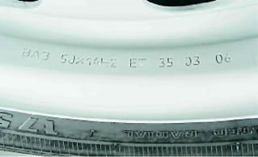
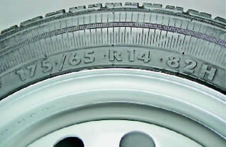
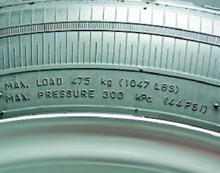
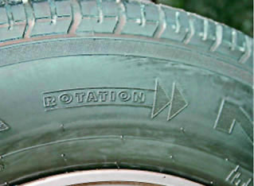

Ходовая часть - Колёса, шины и ступицыОсновные данные для контроля, регулировки и обслуживания
Верхнее значение для колес, устанавливаемых производителем, а нижнее — разрешенных для установки. Моменты затяжки резьбовых соединений
ОПИСАНИЕ На автомобиль с 16-клапанным двигателем завод-изготовитель устанавливает колеса (диски) для бескамерных шин 5Jxl3H2 ЕТ 35, 5Тх14Н2ЕТ35или572Тх14Н2 ЕТ35, где: 5 (572) — ширина обода в дюймах; J — условное обозначение профиля обода; 13 (14) — посадочный диаметр обода под шину в дюймах; Н2 — условное обозначение формы посадочных полок обода; ЕТ — условное обозначение вылета обода; 35 - вылет обода в миллиметрах. 
Примечание Вылет обода (ЕТ) - это расстояние между плоскостью, разделяющей обод колеса пополам (плоскость, равноудаленная от бортов обода), и привалочной (крепежной) плоскостью колеса. Автомобиль комплектуется бескамерными шинами 175/70R13 82Т(или Н), 175/65R1482H или 185/ 60R14 82Н, где: 175 (185) — ширина профиля в миллиметрах; 65 (60) — отношение высоты профиля к его ширине в процентах; R обозначение радиальной шины; 14 — посадочный диаметр шины в дюймах; 82 — индекс нагрузки (максимально допустимая нагрузка на шину 475 кгс); Т (Н) — индекс скорости (максимально допустимая скорость 190 и 210 км/ч соответственно). 
Максимальная нагрузка на шину (МАХ LOAD) дублируется в расшифрованном виде вместе с указанием максимально допустимого давления (МАХ AT) воздуха в шине. 
Допускается также устанавливать на автомобиль шины с посадочным диаметром 14 дюймов и индексом скорости Т. Давая рекомендации в выборе тех или иных шин, завод-изготовитель исходит из условий обеспечения максимальной устойчивости, управляемости, проходимости и безопасности автомобиля. Так, колеса с большим вылетом могут задевать за детали тормозных механизмов, а с меньшим — увеличивают нагрузку на подшипники ступиц и могут привести к непредсказуемому поведению автомобиля при экстренном торможении или в случае отказа одного из контуров тормозной системы. Высокопрофильные шины могут задевать за детали кузова при максимальных ходах подвески, а широкие — тереться о лонжероны автомобиля или его крылья при больших углах поворота. Шина с меньшим индексом нагрузки может лопнуть под максимально загруженным автомобилем, а занижение индекса скорости чревато разрушением шины при движении на высокой скорости. Шины, которые могут быть установлены на автомобиль, подразделяются на три типа: летние, зимние и всесезонные. Если автомобиль эксплуатируется круглый год, а зима снежная, то лучше иметь два комплекта колес: с зимними и летними шинами. Зимние шины изготовлены из более мягкой резины, что позволяет им не «каменеть» при отрицательных температурах, а на протекторе выполнены узкие волнистые прорези — ламели. Это позволяет шине лучше цепляться за шероховатости покрытия. На боковинах зимних шин может быть нанесена надпись M + S или M.S. Возможность использования зимой шипованных шин зависит от конкретных условий эксплуатации автомобиля. Следует учитывать, что шипы предназначены для улучшения сцепных свойств шины только на скользком твердом покрытии, таком как лед или укатанный снег. В остальных случаях шипы бесполезны, а на асфальте даже немного ухудшают сцепление шины с дорогой. Использование зимней шины летом приводит к ее интенсивному износу. Всесезонные шины можно использовать круглый год. От остальных шин их отличает надпись ALL SEASON или TOUS TERRAIN на боковине. По своим показателям они удовлетворительно себя ведут в различных погодных условиях, но при этом летом проигрывают по техническим показателям летним шинам, а зимой — зимним. 
Рисунок протектора может быть универсальным или направленным и не регламентирован требованиями завода-изготовителя. При направленном рисунке протектора на боковине шины наносятся надпись ROTATION и стрелка, указывающая направление вращения колеса при движении автомобиля вперед. Частным случаем направленного рисунка является ассиметричный. В этом случае на боковине нанесена надпись OUTSIDE, которая при монтаже должна находиться с наружной стороны. - |
||||||||||||||||||||||||||||||||||||||||||||